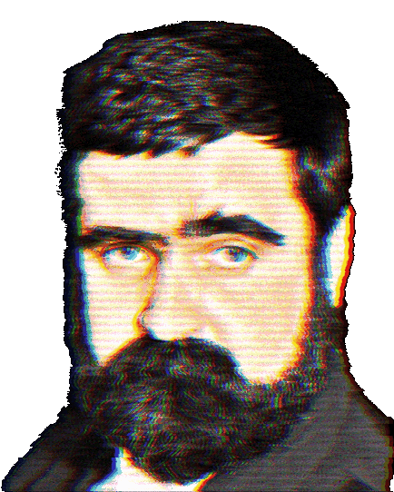
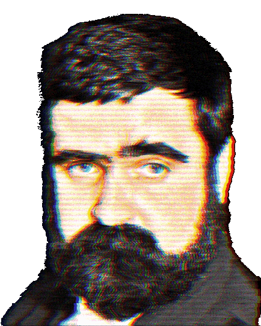

Głowa głowy PPPP w latach 1990-1992, założyciela partii, Janusza Rewińskiego
Polska Partia Przyjaciół Piwa - że co?
Polska Partia Przyjaciół Piwa (PPPP) to jedna z najważniejszych partii w historii Polski. Powstała na początku lat 90. jako żart – miała promować kulturę spokojnego picia piwa zamiast hałaśliwych knajp i wódczanych libacji. Ku zaskoczeniu wszystkich, w wyborach 1991 roku zdobyła aż 16 mandatów w Sejmie.
Po wejściu do polityki sprawy się trochę skomplikowały – partia podzieliła się na frakcje Małego i Dużego Piwa, a później zniknęła ze sceny. Mimo to PPPP do dziś jest symbolem geniuszu polskiej polityki i dowodem na to, że czasem najlepsze pomysły rodzą się przy kuflu.
Na podstawie Wikipedii